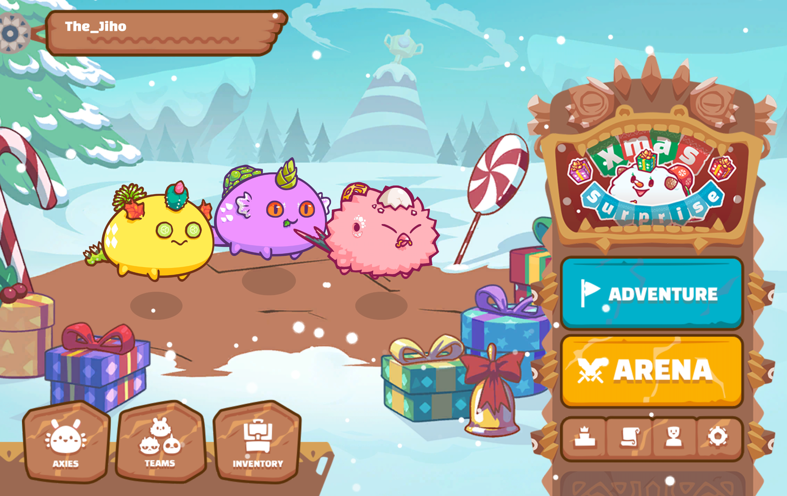

Guias de Axie Infinity

Axie Infinity es un universo de mascotas digital donde los jugadores luchan, crían e intercambian criaturas de fantasía llamadas Axies.
Esta guía te ayudará a aprender los conceptos básicos relacionados con el juego y las ganancias a través de la aplicación Axie Community Alpha.
Si aún necesita configurar una cuenta y adquirir Axies, comienza con esta guía de incorporación . ¿Ya conoces los conceptos básicos del juego? ¡Consulte esta página para obtener guías y tutoriales más avanzados!
¿Que es un Axie?
Los Axies son criaturas de fantasía con las que los jugadores pueden luchar, recolectar y criar.
Cada Axie tiene diferentes rasgos que determinan su papel en la batalla.
Estadisticas
Cada Axie tiene 4 estadisticas, Vida (Health) , Moral (Morale), Habilidad (Skill) y Velocidad (Speed). Esto es lo que hacen cada una de ellas:
HP: Es la vida del Axie esto se traduce en la cantidad de daño que puede recibir tu Axie aantes de ser noqueado.
Morale: Esto incrementa la chance de que tu Axie haga un golpe critico, ademas hace que sea más probable entrar en la última posición y agrega más "ticks" de la última posición.
Skill: La habilidad agrega daño cuando un Axie juega varias cartas a la vez (combo). El daño adicional se calcula así: (ataque de cartas * habilidad) / 500.
Speed: La velocidad determina el orden de los turnos. Los Axies más rápidos atacan primero. La velocidad también reduce la posibilidad de que un Axie sea víctima de un golpe crítico. Si dos Axies tienen la misma velocidad, así es como se determina el orden de ataque: Alta velocidad> HP bajo> Habilidad alta> Moral alta> ID de luchador bajo.
Las estadísticas de un Axie dependen de dos variables: su clase y las partes del cuerpo.
Partes del Cuerpo de un Axie
Cada Axie tiene 6 partes del cuerpo: Ojos, Orejas, Cuerno, Boca, Espalda, Cola.
Cuernos, bocas, espaldas y colas determinan qué cartas puede usar un Axie en la batalla.
Cada parte del cuerpo también agrega estadísticas según la clase de la parte:
Planta: 3 HP + 1 Moral | Acuático: 3 velocidades + 1 HP | Reptil: 3 HP + 1 Velocidad
Bestia: 3 de moral + 1 de velocidad |
Bug (Bicho) : 3 Moral + 1 HP |
Pájaro: 3 velocidades + 1 moral
Clases de Axie
Cada Axie tiene una clase que es similar a los "tipos" de Pokémon. Cada clase es débil y fuerte frente a otras clases. Al calcular el daño, la clase de carta del movimiento de ataque se compara con la clase Axie del defensor. Esto significa que una carta de pájaro utilizada para atacar a un Axie Bestia infligirá un 15% de daño adicional. Una carta de Bestia utilizada para atacar a un Axie acuático infligirá un 15% menos de daño.
Además, cuando un Axie de cierta clase usa una carta de su clase, obtiene una bonificación de ataque / escudo del 10%. Por ejemplo, un Axie Planta que juegue una carta de planta recibirá un 10% de ataque / escudo adicional.
Es importante tener en cuenta que estos bonos se acumulan. Un Axie Bestia que use una carta de Bestia contra un objetivo Planta hará un 25% (10% + 15%) más de daño.
Las clases también afectan las estadísticas que tiene un Axie. Revia esta hoja para obtener una descripción general de cómo funciona el sistema de estadísticas y clases.
Este video esta subido a una plataforma de blockchain descentralizada registrate
Registrate
Ediciones